Processes provide a way to communicate and apply consistent
standards and practices within NaaS operations. A procedure defines activities
to be undertaken, who performs them, their purpose, how they are performed, and
who is responsible. Once worked through, a process provides an efficient way of
performing a given task in a consistent way, thereby greatly reducing reworks
since all know exactly what, when, and how to perform their tasks.
This section provides a generic process NaaS operators might
use as a reference in defining their own processes that better suit their
organization. It also includes guidelines to help NaaS operators develop their
own administrative and security processes. Additionally, it contains
instructions to create their own I&C instrumentation, such as a checklist,
MOPs, and guideline templates.
In Greenfield scenarios, the site is acquired before the
installation by the NaaS operator; thus, the responsibility of taking care of
the security, safety, and legal procedures belongs to it. The NaaS operator
must assign a site owner to be responsible for the security of the site,
predefining their administrative and security procedures for site visits on a
site access procedure. For existing sites where a
installation space is leased (e.g., MNO towers or a private building), site
owners must inform the NaaS operator about their access request requirements,
the operator then considering those requirements as part of their own
procedures.
This section evaluates site access procedures, including
safety and legal requirements. NaaS operators
may consider these procedures as prerequisites to work on their site
facilities, thereby avoiding security issues and ensuring field worker safety
while avoiding legal penalties.
4.1.1
Safety Procedures Definition
Prior to allowing anyone to work on a site, a relevant risk
assessment and a safe work procedure (SWP) must
be developed and provided to the site owner.
Safety procedures are detailed documents that cover the
implementation of safe work systems. As such, they constitute a mandatory
element in attaining the required safety standards given either by industrial
standards or by law. Its imperative that the NaaS operator be informed of
local regulations and ensure that all field workers follow the safety
procedures.
Below there is a set of considerations for NaaS Operator in
order to develop their own Safe Work Procedure.
- Training ‒ NaaS operators must ensure that field workers
have the proper training to work with power equipment and work at height.
- Worksite Analysis and Inspection ‒ NaaS operators must
ensure that all sites have the proper facilities to avoid work accidents.
- Emergency Response ‒ NaaS operators must ensure that all
field workers know what to do in case of an emergency.
- Personal Protective Equipment ‒ NaaS operators must ensure
that all field workers know how to properly wear
their personal protective equipment.
- Electrical Safety ‒ NaaS operators must ensure that all
space assigned for power equipment be properly marked.
The above considerations are
just an example of NaaS operator safety procedures; please review local
regulation requirements.
The deployment manager or field supervisor is to ensure that
the safety procedures are kept up-to-date and under constant review in light of
feedback from operational experience and safety audit reports. Changes are to
be initiated where existing safety procedures are found inadequate or in need of
improvement. As a best practice, NaaS operators
may include a checklist in their installation MOPs. The Check-list will ensure
that field workers perform the required safe work procedures, requiring each
field worker sign that theyre in compliance. Then the document must be
included in the close-out package.
4.1.2
Security Procedures Definition
A NaaS operator and site owners may use a security control
with an access procedure to control visitors to the site. Visitors must obtain
written authorization from the site owner before entering the site. This should
be submitted to the site owner with the access request form. Field workers must
carry relevant records of their competency and a copy of the safe work
procedures on each visit to the site.
Field technicians who access a site for any reason might
perform potentially hazardous tasks or have the potential to interrupt a
service of another company; here the site owner must know which activities are
being undertaken on their site. The more information visitors can provide, the
better. As a best practice, site access can only be given for the permitted use
described in an approved access request form. Any additional work or variations
to the initial proposal must be submitted to the site owner or infrastructure
owner for further approval. An access request form template
is provided for NaaS operators to adapt to their own security standards.
4.1.3
Security Requirements
A NaaS operator may consider adding working periods in their access request form to avoid work
overlap during that period. This is to avoid unauthorized visitors and enhance
the control of any security issue. Overestimation of access times can be
refused, especially where such access inconveniences other service users.
Underestimations of access times must also be avoided, as they often lead to
service interruptions due to work running overtime.
Additionally, to control access
during the commissioning and integration process, all stakeholders must
previously request access to the network to the NaaS operators network
operation center (NOC), providing their user ID so as to perform the network
configurations (this has been previously mentioned in the NaaS operator
scenario, as the core network could belong to a mobile network operator (MNO).
If this is the case, the NaaS operators integration team and MNO personnel can
schedule integration of the RAN site with the MNO core network (this is
commonly performed by MNO staff).
The following sections provide guidelines for the NaaS
operator to prepare for the I&C tasks, create their own I&C MOP, define
acceptance test criteria, and properly manage all the generated documentation
using the most appropriate tools and methods.
4.2.1
Pre-Work Guidelines
Before installation procedures, a set of tasks must be
prepared to enable seamless work, thereby avoiding delays and rework that
result in cost overruns. The scope of the prework task is to ensure all requirements
(e.g., BOQs, site survey reports, TX LLD, RAN LLD, vendor installation and
configuration guides) are in place in preparation for the following tasks:
- Request access permits
- Control and manage outgoing equipment from the warehouse
- Plan transportation routes from the warehouse to the sites
- Customize the MOP on a site-by-site basis
- Generate configuration files for each site
In this way, all requirements will be ready before field
technicians arrive at the remote sites. A best practice is to identify points
of contact (PoC) for each requirement; each will upload their respective
documents to cloud platforms such as Google Drive, DropBox, or SharePoint. In
this way the information can be easily referenced.
In addition, the NaaS operator must identify the PoC or site
owners for each site so as to coordinate access and activities. All these
prerequisites can be used as a go/no go enabler to initiate equipment
transportation tasks.
This module provides a prework checklist template
to ensure all inputs and prerequisites are complete before hands-on, in field
operations.
4.2.1.1 Access
Permits
Access permits are required regardless if the site is owned
by the NaaS operator or is leased on an MNO tower or private building. The owner
of each site must be properly identified before performing the site access
procedures. A best practice is to perform the procedure several days in advance
(the number of days will depend on each site owner); this must be done for each
work visit to every site.
The deployment manager might carry out this activity,
sending the access request form to the previously identified site owner with
the required identification of all NaaS operator field technicians. The NaaS
operator might use the access request form template for this purpose.
4.2.1.2 Equipment Pickup
Checklist
After a NaaS operator has defined the kitting process, the
warehouse manager, deployment manager, and field technician must be aware of
each equipment piece to be installed. This is to follow the RAN LLD BOQ
detailed in a pickup checklist prepared for each site that details:
- the warehouse of origin
- destination site.
- warehouse staff responsible for delivering the equipment
- technician responsible for receiving the equipment
The checklist must be shared and signed by all stakeholders.
As a best practice, it must be included in the closeout package as proof that
the equipment left the warehouse. A NaaS operator may use the equipment pickup checklist template for this purpose.
4.2.1.3 Route
Planning
Depending on the deployment plan and for multiple reasons
(e.g., optimize NaaS operator vehicle use) equipment delivery might include
visiting more than one site . Improving the planning process to reduce the
number of trucks, miles, and drivers can increase business efficiency.
Here is a set of considerations for rural route optimization:
- Define the destination site A destination site is where a field technician team
transporting the equipment will perform the installation. (Additional site
stops might be included to drop off network equipment for other teams.)
- Calculate equipment volume and
weight This must be considered so as not
to exceed vehicle load capacity and comply with road regulations (thereby
avoiding possible fines and delays).
- Obtain vehicle load capacity The load capacity will define the number of stops. A
smaller vehicle might need to go directly to the destination site, while a high
load truck could stop at several sites.
- Personnel Regulations can
stipulate that a driver is limited in relation to the amount of driving they
can do during a single time span; mandatory breaks may need to be factored in.
A good practice is to develop a spreadsheet that includes
the site address; this can be imported to a planning route tool. Several free
online tools can help plot a route, the easy-to-use Google Maps likely being
the most popular. And its possible to export the route spreadsheet to Google
Maps, enabling the tracing of a destination site route and determining which
sites are close to the it.
See https://www.google.com/earth/outreach/learn/visualize-your-data-on-a-custom-map
for more information.
4.2.1.4 Installation
MOP Generation
Once a Naas operator has created its own MOP, it should be
adapted for each installation site, reflecting the specific site information,
power equipment, transmission technology, and RAN scenario.
This is an essential part of the low-tech model,
addressing field technicians with the specific task to perform (thereby
avoiding possible mistakes and achieving successful ATPs).
4.2.1.5 Commissioning
Script Generation
Before the installation task can commence, the TX LLD must
reflect each network element IP address, including the IP link between the base
station and O&M system.
The integration engineer needs this information to generate
the commissioning script that is to be loaded in the local base station.
4.2.2
Equipment Delivery Guidelines
Equipment delivery involves warehouse personnel, field
technician(s) and the deployment manager.
4.2.2.1 Preparation
Field personnel must have their badge or personal
identification, have double-checked that they have brought all required tools
and safety gear, that all is in optimal condition. They must also have verified
their vehicle is in good condition and its documentation is readily available.
Additionally, they have gathered their transportation routes, site permits,
keys or codes, and a copy of the equipment pickup checklist
provided by their deployment manager.
Previously shared by the deployment manager, warehouse
personnel must be aware who is to pick up the equipment.
4.2.2.2 Equipment
Pick-Up
A best practice is for both local warehouse and field
personnel to double-check the network equipment and ancillaries. Afterward the
validation, field technician and warehouse personnel must sign the equipment
pickup checklist which must be used as proof that the right equipment was
delivered to the field technicians. Both, warehouse personnel and field
technicians must keep a copy of the document. Field personnel must follow the
transportation routes and report to the deployment manager when they arrive at
each site included in the route.
4.2.2.3 Receiving
the Equipment
Once the field personnel and equipment arrives at the site
location and administrative and security procedures are performed as defined in
section 4.1, the receiving task is carried out. This entails unpacking
previously assembled kits, filling the site equipment reception checklist, and
verifying that all equipment arrived in optimal condition. This task must also
be performed if a shipping company delivered the equipment. When the receiving
task is complete and field personnel properly rested , the installation task
can be performed.
4.2.3
Installation Guidelines
This section guides the NaaS operator about how to create
its own MOP for RAN, transmission and power equipment installation for the
NaaS operators low-techfield crew.
For NaaS operators to develop their own installation MOP,
this section provides a set of considerations, analysis, and useful examples used
in actual installation rollouts. As a best practice, NaaS operators might
consider organizing their procedures in three distinct MOP documents that will
guide the field technicians tasks:
- Power equipment installation
- Transmission equipment installation (satellite, microwave, and fiber)
- RAN equipment installation
A best practice is to layout MOP tasks in chronological order (as seen in the example below):
|
Power Equipment
Installation MOP Contents
|
Backhaul Equipment
Installation MOP Contents
|
RAN Equipment Installation
MOP Contents
|
|
1. Access
Request
2. Health &
Safety Measures
3.
Preinstallation Procedures
4. Connection Diagram
5. Equipment
Description
5.1 Power Equipment Installation
5.2 Cabling &
Labeling
|
1. Access
Request
2 .Health &
Safety Measures
3.
Pre-Installation Procedures
4. Connection
Diagram
5. Equipment
Description
5.1 Antenna
Mounting (Microwave or VSAT dish)
5.2 IDU or
Modem Mounting
5.3 Cabling
& Labeling
|
1. Access
Request
2. Health &
Safety Measures
3.
Preinstallation Procedures
4. Connection
Diagram
5. Equipment
Description
5.1 Antenna Mounting
5.2 Radio Unit Mounting
5.3 Base Station Mounting
5.4 Cabling & Labeling
|
Table 3 Chronological MOP installation tasks by type
The table shows the MOP content for power, backhaul, and RAN
equipment installation. Note that the Access Request and Health & Safety
Measures entries are the same procedures for all documents, so a NaaS operator
might consider splitting those sections into another document.
This module provides generic installation MOP templates
for power, backhaul and RAN to be
adapted by NaaS operators. The following section is an analysis of a generic
MOP for RAN equipment installation.
4.2.3.1 Access Request
The MOP should include a section that indicates the task
that a field technician must perform step-by-step to request site access, as
previously defined by the NaaS operator and described in section 4.1.3.
4.2.3.2 Health
& Safety Measures
The installation MOP must contain a set of tasks to prevent
injuries and detail the PPE that field technicians must wear during equipment
installation tasks. NaaS operators must include and consider those tasks as a
prerequisite for equipment installation procedures, as was previously defined
in section 4.1.1.
4.2.3.3 Pre-Installation
Preinstallation tasks are a set of validations field
technicians must perform before equipment installation. A NaaS operator can
consider it as a prerequisite before the hands-on installation tasks and add it
to their MOP. A list of tasks the NaaS operator can include in their MOP
follows:
1.
Site Material Received
A field supervisor or technician must verify all equipment is
delivered to the site according to the receive checklist and is in good
condition. A best practice is to include a copy of a receive checklist in the
MOP.
2.
Details of Tools and Testers
A MOP might include a list of tools and testers at
the beginning of the document; to save them time, this will help ensure the
installation technicians have all the required tools before climbing a tower or
entering a private site. Figure 10 shows common tools used in RAN equipment
installation.
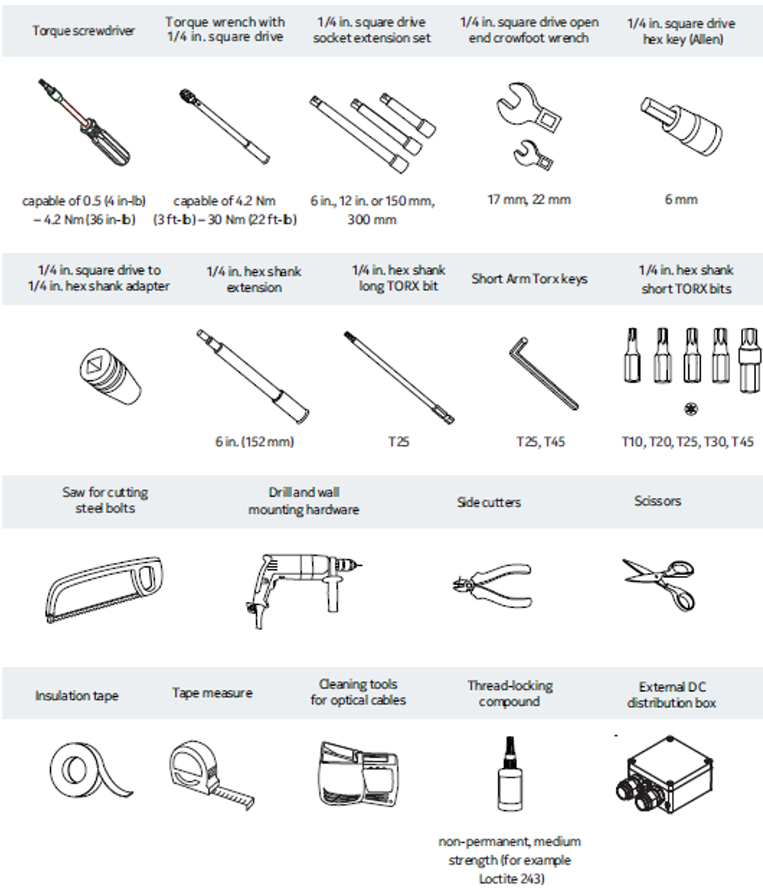
Figure 10
Common tools used in RAN equipment installation
3.
Verify Weather Conditions
The field supervisor must verify weather conditions before
work is done in heights. Best practices should not allow work in heights where
winds velocity exceeds 30Km/h. Water, snow, or ice accumulated on the tower
should be an indication that installation tasks should stop until conditions
improve.
4.
Winch Installation
Installing heavy components in heights will require a winch
or a crane that uses iron cables; the winch must be fixed on a completely
stable structure.
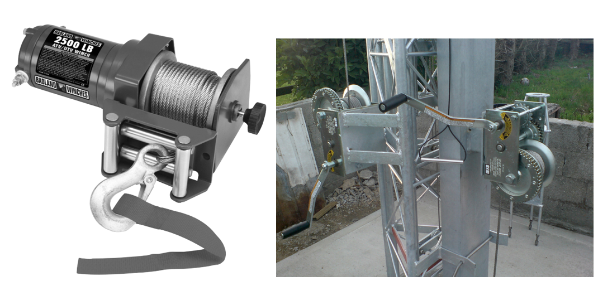
Figure 11 Commonly used winch for tower
installation
Installation
procedures can start when the winch is properly installed.
4.2.3.4 Connection
Diagram
To achieve a better understanding, for each installation
scenario a connection diagram, showing the interconnection between network
elements, must be developed for RAN, backhaul, and
power equipment.
Figure 12 shows RAN connection diagram samples. Depending on
scenario complexity, a single diagram could cover all connections or it could
be split upfor example, power connections in one diagram, with fiber and RF
connections in another.
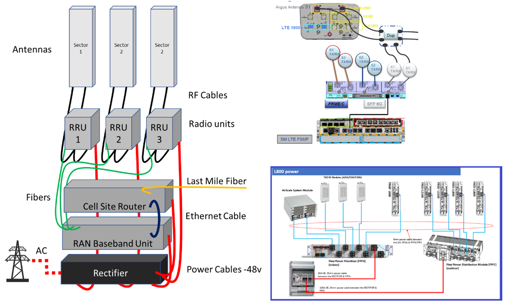
Figure 12 Connection
diagrams used in an actual MOP
The MOP must clearly depict the installation scenario. In
the Figure 12 example, it considers the following: three-sector scenario MIMO
2X2 with fiber backhaul and a rectifier that takes power from the grid.
Connection diagrams are intended to represent a high-level overview of the entire
installation and don't require the use of actual equipment images. Additional
details for connections procedures could be detailed in equipment installation
sections.
4.2.3.5 Equipment Description
To further define installation tasks, a short description of
each network equipment element must be added to the MOP: illustrative images
of actual network equipment can be included that identify all physical
interfaces. This information can be obtained from vendor documentation.
Figure 13 shows an illustration of the physical interface of
a RAN base station, radio unit, and antenna ports.
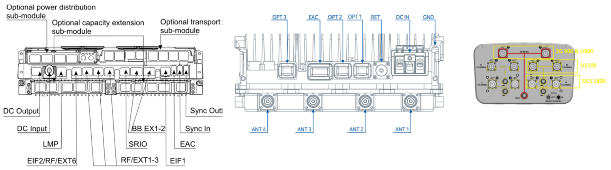
Figure 13
General physical interfaces of RAN equipment
4.2.3.6 Ancillaries List
The MOP can include a list of ancillaries required to
install the equipment especially those used for equipment to be installed at
height (e.g., antennas and radio units). This can help ensure that field
technicians have everything in their bag before climbing a tower, thereby
saving time in their tasks. Required ancillaries for each equipment element
must be listed in vendor documentation. Figure 14 shows ancillaries required
for a radio unit installation:
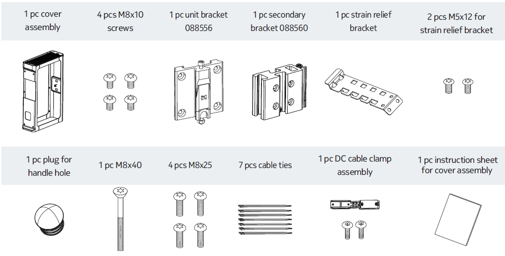
Figure 14
Ancillaries required for the installation of a radio unit
4.2.3.7
Equipment Installation
The equipment installation procedure will depend on facility
characteristics, backhaul technology, and vendors the NaaS operator has chosen.
Using the installation guidelines of each vendor, this
procedure should be detailed step-by-step and as clearly as possible in the
MOP. The MOP can include engineering diagrams from vendor documentation or
actual photos from previous installations. The next set of illustrations are a
sample specifically for RAN equipment installation, radio unit mounting to a
pole, and grounding of the radio unit.
Radio Unit Mounting.
1.
Lifting the Radio Unit :
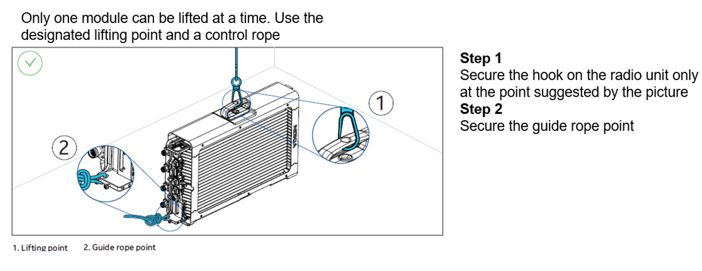
2.
Installing the Radio Unit on a Pole:
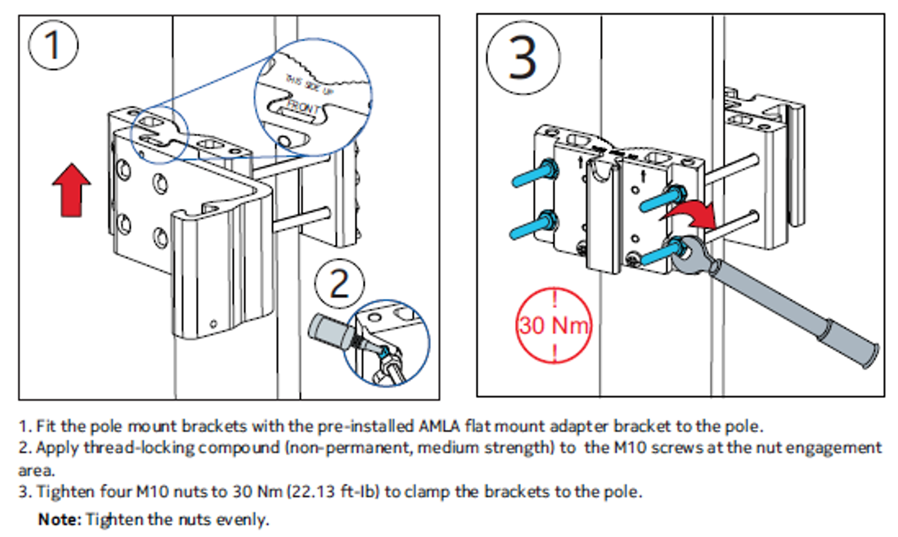
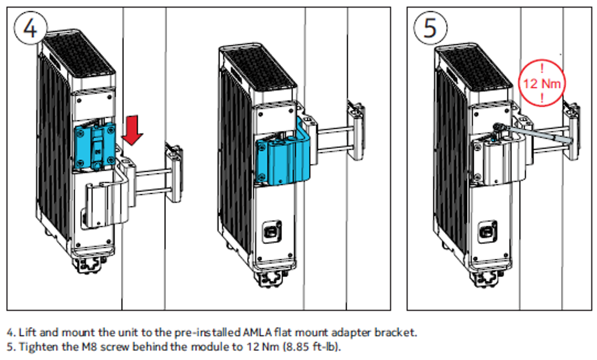
3. Cabling the Radio Unit on ground:
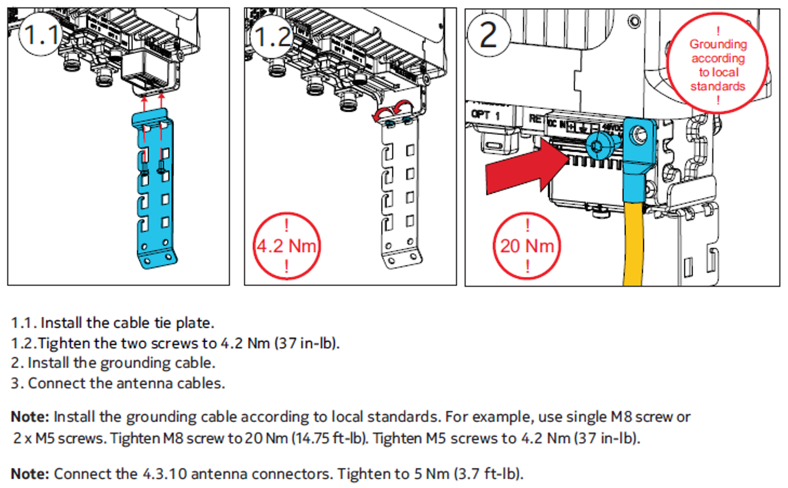
Specialized Installation Procedures such as Microwave
Antenna RF Antennas can be reviewed in the Primer Antenna
Installation Procedures which provide a set of instructions to lift and install
the Antennas in Tower. This module also provides considerations to follow
during Power Installation Equipment in the Power Installation
MOP template.
This module provides a generic installation method of procedure templates for
power, backhaul, and RAN equipment that a NaaS operator
can adapt for their own scenarios.
4.2.3.8 Labeling
Labeling is an important task of any installation procedure;
it enables an easy management of cabling by identifying each one that is
connected to each network equipment component. Labeling is especially important
during the maintenance phase, when a team who didnt construct the site needs
to troubleshoot equipment.
NaaS operators must define the cabling standards for all
connections, including labeling for the following cables:
- Jumper cables
- DC supply cables
- AC supply cables
- Fiber cables
- GPS cables
- Grounding
- Transmission cables
As a best practice, labels must be affixed at both ends of
each cable and a code should be established for each cable type. Figure 15
shows an example for jumper cables in thean antenna:
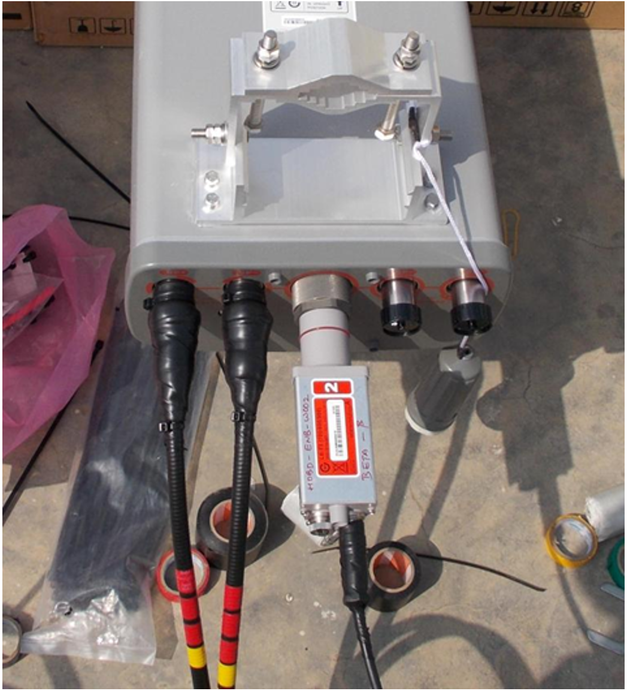
Figure 15
Labeling of RF jumpers
In Figure 15 the RF jumper cables are labeled with three red
marks and one yellow mark. The meaning will depend on a NaaS operators own standards.
Labeling should be added in the MOP, where a best practice is to include a
table with the labeling requirements/standard.
4.2.4
Commissioning and Integration
Guidelines
Transmission commissioning refers to the process that
creates the links between the core network and the management system; its
considered as a prerequisite of RAN commissioning and depends on the core
functions. This commissioning process depends on the transmission scenario,
since the process differs between commissioning a site cell router, microwave
system, and a satellite modem.
Vendors of each scenario must provide detailed documentation
to commission their equipment. NaaS operators must read and understand this
documentation, in addition to addressing it with their field personnel.
RAN vendors use different methods and instructions for
commissioning their equipment. For example, there are vendors with features
that permit automatic discovery of the base station in their O&M system
under certain conditions and without manual intervention. NaaS operators can
evaluate if this feature is applicable in their network and is within their
budget.
This section analyzes some processes that NaaS operators can
consider to facilitate C&I tasks; they depend on the operators staff
profiles.
Different options are detailed, considering the balance of
tasks between field technicians and integration engineer:
4.2.4.1 Preconfigure equipment
in the local warehouse
This option lets an engineer load a commissioning script,
license file, and software upgrade package to the baseband unit at the
warehouse. Its then powered off and taken to the planned site where, after
power-up, the remaining portion of the integration is performed remotely from
an O&M system. Preconfiguring equipment under controlled circumstances
saves time at a site, where backhaul is less robust and can cause reception
delays of the configuration files. Additionally, if troubleshooting is required,
its easier for experienced technical staff to be available at a centralized
warehouse rather than rural sites.
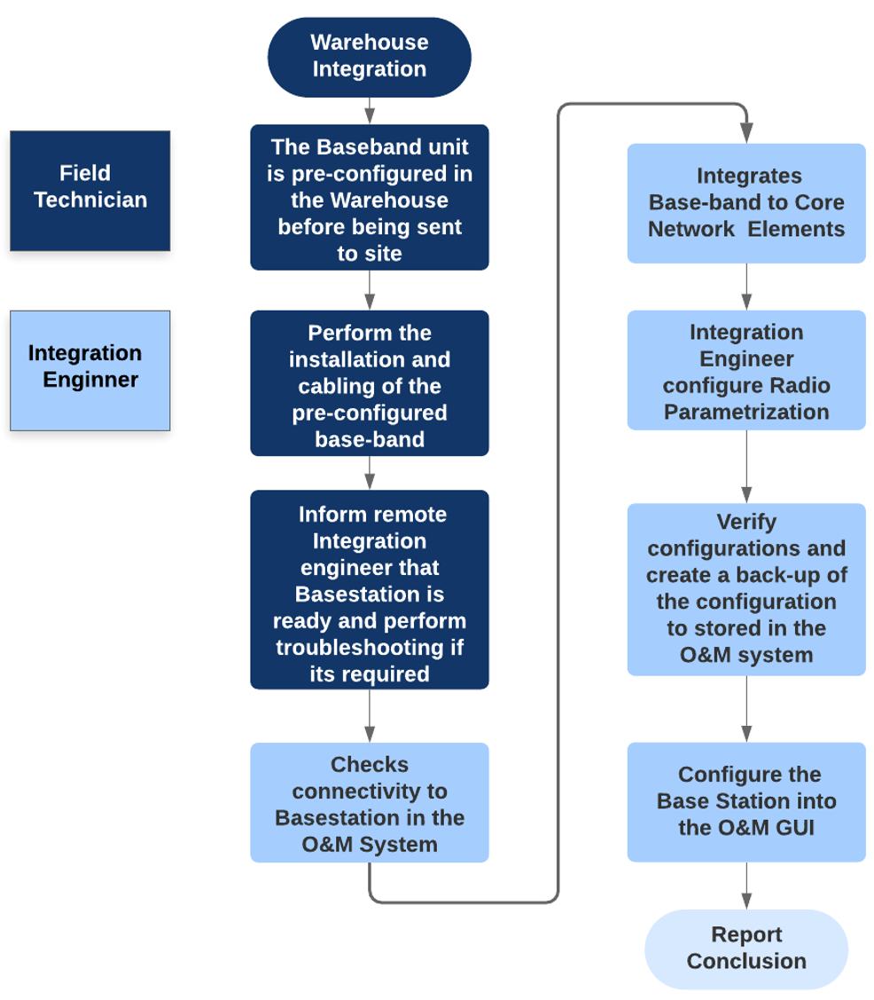
Figure 16 Warehouse commissioning and
integration
If its not possible to preconfigure the equipment, a
commissioning script should be provided before the field technicians go onsite.
Once installation concludes, field technicians power-up the equipment and load
the commissioning script (the process is the same as described in Figure 16).
4.2.4.2 Full offsite
integration
With this option, the integration engineer configures and
integrates the baseband node with the commissioning scripts at the warehouse.
They also configure QoS, features, and radio network parametrization there
using O&M and CLI software tools. This option requires a stable internet
connection at the warehouse.
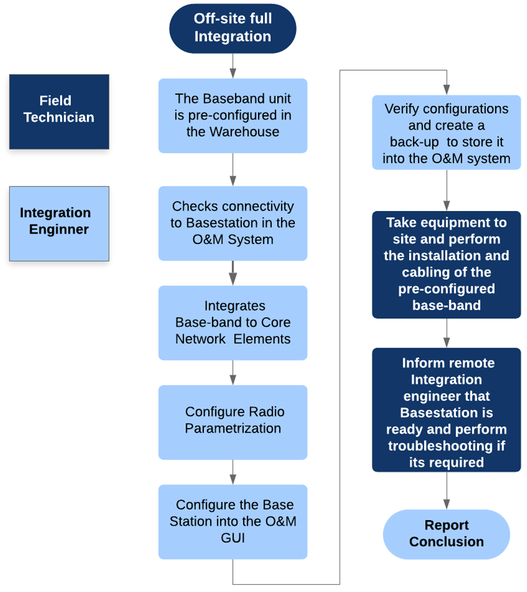
Figure 17 Full offsite integration process
NaaS operators can customize the process depending on their
organization. For example, an experienced field technician could perform the
full offsite integration process.
The processes described above are generic that all vendors
support. Some vendors permit an auto-configuration of the base station under
certain conditions (e.g., self-organized network (SON)) that greatly reduces
manual intervention. After NaaS operators develop their processes, they can
elaborate their own guidelines.
The scope of forthcoming subsections is to guide NaaS
operators in preparing their own I&C guidelines depending on their own
scenario. As an example, this module considers the commissioning process, which
is performed manually in the warehouse (or onsite) by a field engineer and is
remotely supported by an integration engineer. This is a process that all
vendors have in common.
4.2.4.3 Commissioning
guideline elaboration
NaaS operators commissioning guidelines must be designed
with a simple structure containing only that which is required to perform the
procedure. Below is an example of a commissioning guidelines structure:
1 Abstract
2 Prerequisites
2.1 Tools
2.2 Configuration Data
2.3 Preparation
3 Commissioning and Integration Process
3.1 Connecting PC to Base Station, IDU or Modem
3.2 Loading Base Station configuration
3.9 Check the IP Connectivity
4 Call Test
5 Concluding Routines
6 Additional Information
Commissioning Guideline Example
Following the warehouse integration, NaaS operators can
limit the scope of commissioning up to when the O&M link is createdleaving
configurations such as transport network, RF parameterization, QoS, and RF
neighbor relations to the integration process.
Below is a commissioning guideline example:
Abstract
This document describes how to commission and integrate the
base station into a NaaS network. In all cases, procedures must be followed,
regardless whether they are specified in this document.
2 Prerequisites
Before starting integration, the following items must be
completed and understood.
2.1 Tools
Thin client or laptop with:
- Windows (10) include HyperTerminal or Putty software (similar function)
- OMS software
- LAN cable (Ethernet cable with straight connection)
- Customer product information (CPI)
- CLI
2.2 Configuration Data
IP and router configuration design documents prepared by
the design team.
2.3 Preparation
1. Read and understand base station installation documents.
2. Read and understand general requirements when entering
live customer sites
3 Commissioning and Integration Process
Perform the following steps to commission and integrate the
base station.
3.1 Connecting PC to LTE Digital Unit
1. Power on LTE base station
2. Connect LAN cable (RJ45) to base station port LMT and
laptop in LAN port:
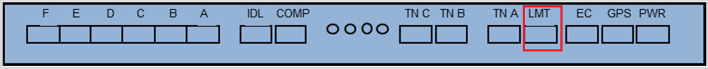
(Best practice is to use real image or diagrams of the
network equipment)
3. Set IP client
as follows (use the real base station IP):
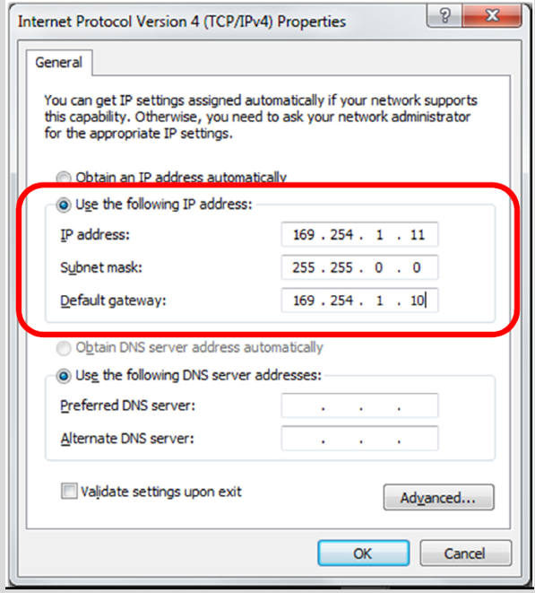
(Best practice: use actual image of the tasks)
4. Connect to base station using the local maintenance tool
5. Fill in RBS IP address (use the O&M IP) then
click Connect
3.2 Loading Site Install, Site Basic, and Site Equipment
1. Click Tools > Integrate Base Station (best
practice: use actual image of the tasks):
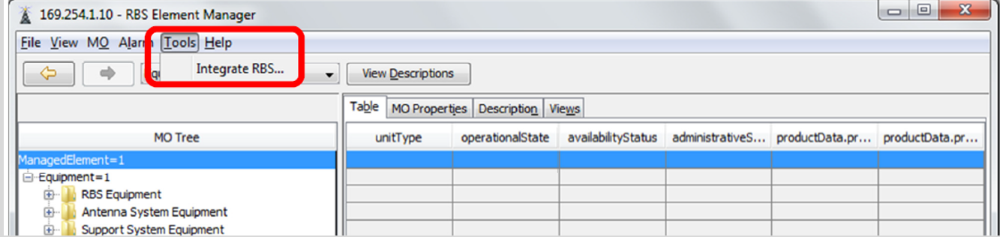
2. Click Browse > Select Site Install script (best
practice: use actual image of the tasks):
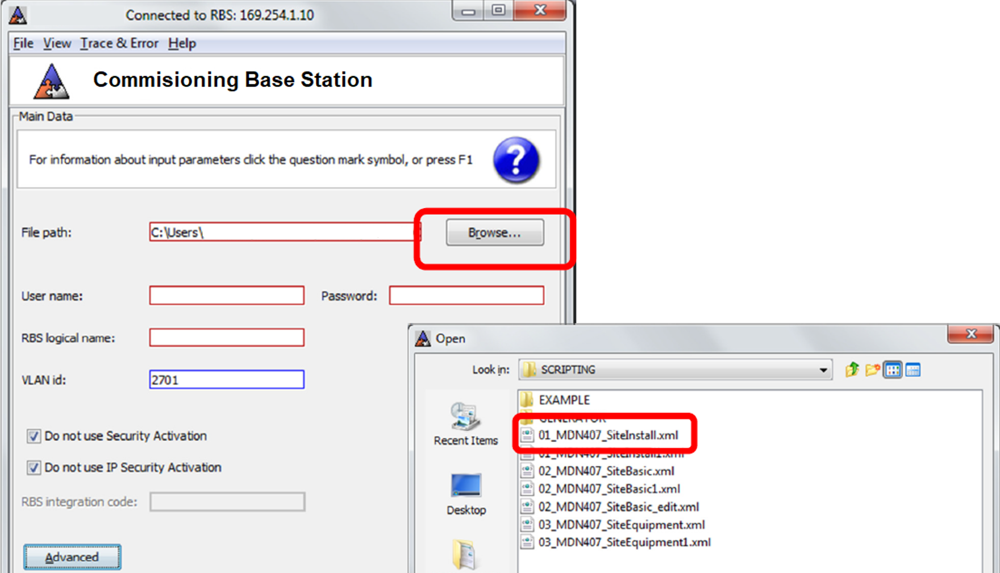
3. Fill in username: <USER> and password:
<PASS> then click Next (factory user and password)
The display shows the Site
Install script content. It configures:
- O&M configuration
- DNS server
Once the commissioning has been successfully performed and the
link between the base station and O&M system has been created and
configured, the integration team can access the base station management system
remotely and perform all missing configurations. The following subsections
provide guidance over the manual integration model that all vendors support.
The integration engineer must prepare the integration
scripts and network access permissions before the maintenance window. A
maintenance window is a time frame in which NaaS operators can integrate their
RAN elements into the MNO core network elements. Commonly this is performed at
night to prevent a possible outage and cause minimal impact to end-users.
If the integration tasks have not been completed and the
maintenance window exceeded, there may be penalties and a rollback procedure to
be carried out. This cancels all progress of the integration tasks and is done
to maintain MNO core network data integrity.
Next is a list of some preparation tasks:
- Preinstall the vendor-specific software required to log
into the O&M system.
- Pre-install CLI remote console provided by the vendor; commonly can be downloaded from
the O&M server or in their intranet.
- Request for base station license previously.
- Prepare integration script.
4.2.4.5 Commissioning process support
Ideally, the field supervisor or field technician calls the
integration engineers to notify them that the equipment has been installed,
configured locally, and the transport network and O&M link are online. The
integration engineers then try to remotely connect to the site to validate
end-to-end connectivity and load the commissioning script. Some issues may
arise and a troubleshooting session might be performed in collaboration with
the integration engineers to ensure the base station is reachable and can be
controlled remotely.
Figure 16 shows the
architecture of O&M interconnections to the base station:
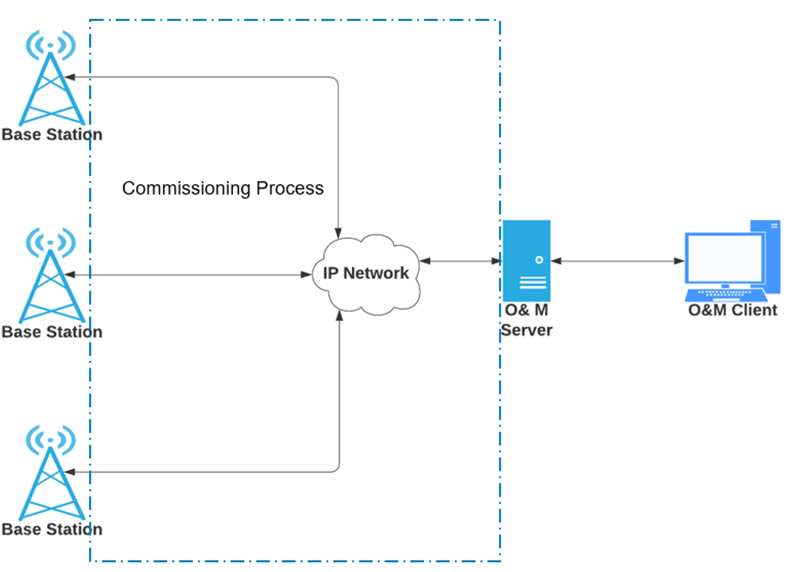
Figure 16 O&M architecture and
interactions between commissioning and integration procedures
The integration engineer should check the status of the base
station elements, reviewing the alarm status. Commonly it will show several
alarms, such as 1) there is no license for the base station, 2) there is no contact
to the core network elements, or 3) there is hardware that hasnt been
configured (e.g., radio units or RET)among other alarms. The integration
engineer must clear the alarms, configuring the base station as indicated in
forthcoming steps.
4.2.4.7
Configure the base station hardware elements
The base station elements, such as radio units and antenna,
must be configured in the base station. Base station architecture will depend
on vendor selection; commonly it also includes RF cards to connect the radio units,
as well as transport cards to connect transmission equipment by fiber optic or
Ethernet cables.
A license must be loaded to configure the base station. The
license may contain the number of radio units, maximum allowed power, or
features a NaaS operator is permitted to use in the base station. The license
is normally controlled and managed using a serial number. After the license has
been successfully installed, the next step is to configure the related base
station parameters as previously defined in RAN LLD (e.g., transmission power
and mechanical tilts).
4.2.4.8
Integrate the missing IP paths to core network elements
The IP connection to the O&M system was created during
the commissioning process. Now the integration engineer must configure the
missing IP connections to the core elements. As section 2.4 mentions, in the
NaaS scenario the core network elements may not belong to the NaaS operator
network. Depending on the agreement, the NaaS operators integration engineer
can configure the base station in the MNOs core elements during a previously
arranged maintenance window, or MNO personnel can carry out the configuration.
Regardless of the agreement, the integration engineer must
validate the connection verifying if the user plane and control plane links are
working properly. If not, troubleshooting may be required using common
techniques such as ping and traceroute to the faulty core element link.
Figure 17 shows an example of RAN element IP configurations.
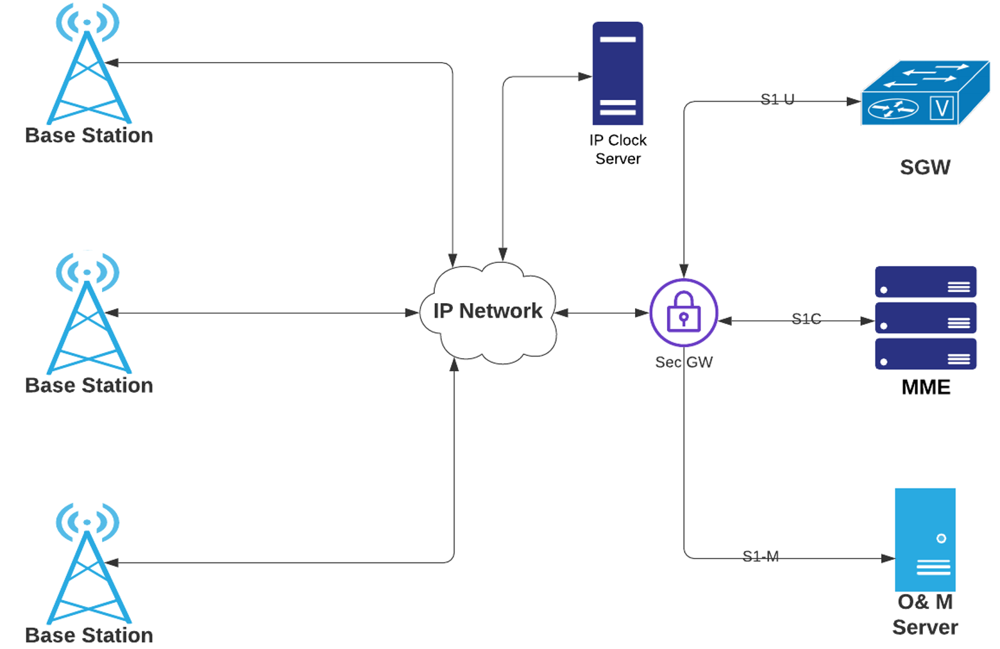
Figure 17 IP configuration of the RAN elements
Radio parameterization from RAN LLD must be loaded into the
base station. In this step, the RF parameterization, QoS parameters, RAN
features activation, cells parameters, and RF neighbor relations are
configured. Using their CLI or GUI, the integration engineer must create or
enter this configuration into the parameterization script, accordingly with the
vendor equipment instruction set.
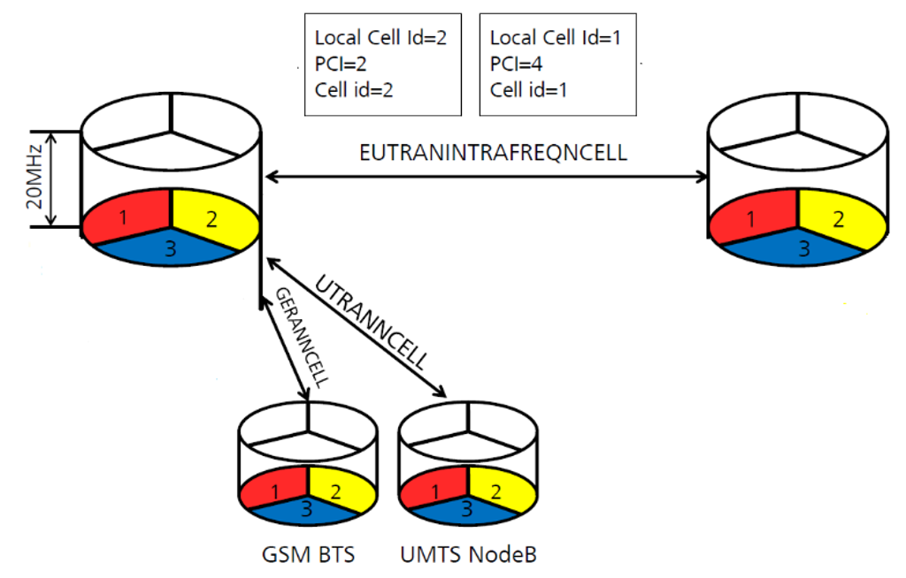
Figure 18 Enabled functionalities during RF parameterization
4.2.4.10 Create data backup
Once the user plane and control plane links are operative
and cells can be managed, a data backup must be created and stored, with one
copy remaining within the base station file system and another in the O&M
server. These actions will ensure continuous operability should the base
station fail for unexpected reasons, thereby avoiding visits to the remote
site.
Most commonly, the integration procedure is made by highly
specialized engineers who have deep knowledge of the hardware and software
architecture of the network equipment. As was detailed in section 3.2, the NaaS
operator can obtain integration services from a specialized consultant
depending on the vendor that has been chosen.
4.2.5 Acceptance Test Procedure Guidelines
The acceptance test begins when the integration activities
have been completed; its carried out on a per-site basis. This function
consists of the validation and acceptance of deployed sites. Each site
undergoes a series of inspections, assessing operability, and conducting
service tests such as physical site inspections, site management, functionality
of alarms, and end-to-end service tests to ensure proper functionality. This
process is supported by field and remote personnel. This section guides a NaaS operator in defining their own installation
acceptance criteria of the transport, base station, power, and antennas to
develop a step-by-step ATP for low-tech field personnel.
Additionally, an ATP template is included in this module;
it contains prerequisites for each test and detailed procedures to perform the
management test.
4.2.5.1 Site information
The acceptance test must be elaborated and filled out for
each site for proper identification. Table 4 shows the required data to properly
identify the site.
|
Site Name
|
|
Site ID
|
|
|
Site Address
|
|
Coordinates
|
|
|
Region
|
|
City
|
|
|
NE Name
|
|
NE ID
|
|
|
O&M IP
|
|
Gateway IP
|
|
Table 4 Site information for the ATP
4.2.5.2
Acceptance guidelines
The acceptance test starts after integration concludes; its
conducted by field technicians and remote personnel (which could be the
integration engineer and/or the NOC).
- operation & maintenance tests
- service tests (e.g., cell and alarm management tests),
- web service and speed tests.
ATP is performed onsite by the field supervisor or field
technician and is supported by the integration team (who performs the operation
and maintenance tests). Results are reported and failures should be resolved in
real-time.
Site acceptance is achieved when:
- All installed equipment has been checked by the field
supervisor to ensure that the site fulfills all
agreed-upon site acceptance criteria.
- Integration verification results indicate that the deployed
site equipment is operational and stable.
- All reported problems found during site
acceptance have been resolved.
4.2.5.3 Installation
inspection
An
installation Inspection must be performed for physical elements of the site,
such as cabinet installation, cabling and labeling, base station,
antennas including a visual operative inspection. The following subsections
include examples of the objectives, prerequisites, and criteria that can be
used by a NaaS operator for reference.
4.2.5.4 Power
measurement
A best ATP practice is to measure DC and AC voltage, thereby
ensuring that power equipment is working properly and AC is within operative
range at the moment of the test.
- AC power measurement: Measuring the power feed from the breakers is a common procedure to be certain that the power
equipment is receiving the right voltage, thereby
avoiding a possible power cut due to breaker overvoltage.
- DC power measurement: To
be certain that the rectifiers are working properly, its possible to measure
the delivered DC power from the power output of the rectifier.
- Battery voltage measurement: Registering the VDC from batteries ensures that they are charging properly. Below is a template for
the VDC register for each battery onsite.
4.2.5.5 Management
test
The management test is a set of tasks that validates that
network equipment can be controlled and monitored from remote locations. A NaaS
operator can consider the following tests to validate O&M remote control:
- Cell management: From the
O&M center, the integration engineer or
NOC personnel must verify if they can unlock or lock cells from transmitting.
- Alarm management: From the
O&M center, the integration engineer or
NOC personnel must verify if they can visualize any alarm at the site
and be able to inform field personnel about them.
- Restart base station: From
the O&M center, the integration engineer or
NOC personnel must perform a restart of the base station and verify
reestablishment of its service .
4.2.5.6 Service
test
A service test proves network performance as a customer
would experience it. Therefore, user equipment already registered in the NaaS
operator network is a prerequisite for this activity. It must be previously
validated to establish it can be performed by the deployment manager or NOC to
avoid disturbance in operative sites.
Recommended test services are:
|
● Web
browsing
|
● Speed
test
|
|
● CSFB
call (if NaaS operator network has WCDMA)
|
● Video
streaming
|
|
● VoLTE
|
● Audio
streaming
|
|
● SMS
message
|
|
The provided ATP template in this module
contains prerequisites for each test as well as
detailed procedures to perform the service test.
4.2.5.7 Troubleshooting
During the ATP remote personnel monitoring the base station
should verify its overall performance. Any anomaly should inform field
personnel to immediately troubleshoot if its possible; otherwise the issue
should be properly recorded in a punch list section within the ATP document.
Table 5 is a template of a generic punch list:
|
ID
|
Issue Description
|
ATP #
|
Severity
|
Detected Date
|
Repair Responsible
|
Repair Date
|
|
|
|
|
|
|
|
|
Table 5 ATP Punch List
After successful troubleshooting, failed criteria should be
tested again to sufficiently mitigate all issues.
4.2.6
Closeout Package Guidelines
A
NaaS operator must
gather, organize, review, and share all the relevant documentation generated
before and during the I&C process. It must
prove that sourced personnel followed all contract agreements and its
objectives have been met. To facilitate the NaaS operator closeout package activities, here is a set of
considerations to follow:
- Identify a responsible party for the
closeout package deliverables; this will help coordinate the required
documentation with the right persons.
- Use cloud tools to upload the documentation; this will help to easily gain control and
manage all documentation for all sites. Tools such as Google Drive, Dropbox,
and SharePoint can be used. These are compared in the High-Level Project Plan Module.
- Elaborate a checklist; this will help
the responsible party of the closeout package
to track missing information before final submission to operations.
This module includes a generic closeout
package checklist to be customized by NaaS operators depending on their generated documentation within
the I&C process.
Table 8 shows considerations for a NaaS operator to organize
its documentation, long with suggested documentation generated during the
entire deployment that culminates in the I&C process.
|
Document
|
Description
|
|
Site Documentation
|
A.
Copy of Site Leasing Agreements or a
copy of Site proof of ownership.
B.
Copy of contract with the electric
company
|
|
Site Survey
|
Copy of Site Survey that contains :
- Site Location
- Site Scenario
- Site Access
- Civil Infrastructure
- Power supply
- Telecom Infrastructure
- Tx Survey
- Site Design Drawings
- Plant Drawing with equipment to install
Photo Report
|
|
Plan General Elevation
|
A. General plant
plan which indicates the distribution of the site and antenna details
B. Elevation Plan
that represents the tower, wiring, backhaul equipment & RAN equipment
distribution
|
|
Construction Plan
|
Plan of the Site infrastructure, Building or tower
|
|
Plane Electric Scheme
|
Electric scheme that represents the power equipment
distribution on the cabinet
|
|
Plan - General
|
Plan with site location
|
|
Format Required Equipment
|
Format scan indicating outgoing warehouse equipment
|
|
Excel Photographic Report
|
Node Information: Site Name, Location,
Contractor, Implementation & Integration Dates, Technology (2G | 3G |
4G), Sectors & Antenna details, panoramic site photo.
Pre-Installation Report: Report that contains photographs
of the cabinet, RAN equipment & backhaul equipment.
Installation Report: Report that contains photos of
cabinet, RAN & Backhaul equipment, radiant system, sector equipment &
wiring.
Environment, Health and Safety (EHS) Report: Report that
contains forms, team leader using safety equipment & tools
|
|
Format - Analysis of Safety at Work
|
Format Scan that indicates the activities of the day,
workers and supervisor, safety equipment & steps of the activity
|
|
Format - Training
|
Format scan that indicates the workers and supervisor
& training type. (Following local regulations)
|
|
Format - Safety Harness and Anchor Line Checklist
|
Format scan that indicates the conditions of the
equipment and technician name.
|
|
Format - High-Risk Work
Permit
|
Format scan that indicates the workers and supervisor,
security measures, dangers/risks and control measures.
|
|
Excel Site Inventory
|
Installed equipment report that includes photographs and
equipment model & serial number.
|
|
Excel - Acceptation Protocol
|
A. General Information: Implementation & Commissioning Dates, Site Name, Cell Names, Site
Location, Installation Type, Power Cabinet Type, BBU Serial Number,
Contractor & Responsible Names.
B1. Mobile Network Info: RF Antenna Type, Number of Sectors, Rectifier Cabinet
Model, RF Antenna Height.
B2. Inspection protocol of RF equipment installation: Yes/No format that evaluates RF equipment installation.
B3. RF Alarms Tests Protocol: Yes/No format that evaluate alarms of BTS, Node B &
eNB
|
|
Environmental Report
|
Report that includes basic information of the station,
project & contractor. Also contains photographs of the station, material
delivery & warehouse waste delivery
|
Table 6 Sample of Close Out Package Checklist